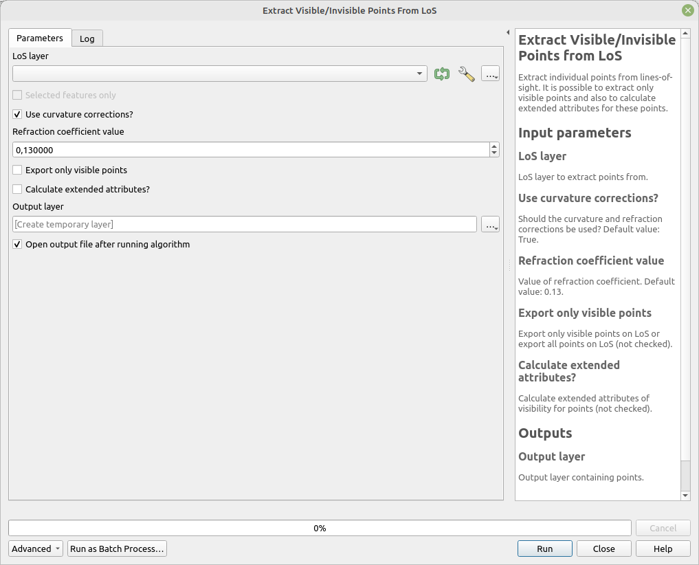

Extract Points from LoS
Create points set of points at given distance from points from input layer that span given angle offset from main direction layer.
The default value produces range of values [-20;20] by one angle from azimuth of point in main direction layer.
Parameters
| Label | Name | Type | Description |
|---|---|---|---|
| LoS layer | LoSLayer |
[vector: line] | LoS layer to extract points from. |
| Use curvature corrections? | CurvatureCorrections |
[boolean] Default: True |
Should the curvarture and refraction corrections be used? |
| Refraction coefficient value | RefractionCoefficient |
[number] Default: 0.13 |
Value of refraction coefficient. |
| Export only visible points | OnlyVisiblePoints |
[boolean] Default: False |
Export only visible points on LoS or export all points on LoS (not checked). |
| Output layer | OutputLayer |
[vector: point] | Output layer containing points. |
Outputs
| Label | Name | Type | Description |
|---|---|---|---|
| Output layer | OutputLayer |
[vector: point] | Output layer containing points. |
Fields in the output layer
- id_observer - integer - value from expected field (
id_observer) inLoSLayer - id_target - integer - value from expected field (
id_target) inLoSLayer - visible - boolean - is the point visible
Tool screenshot
